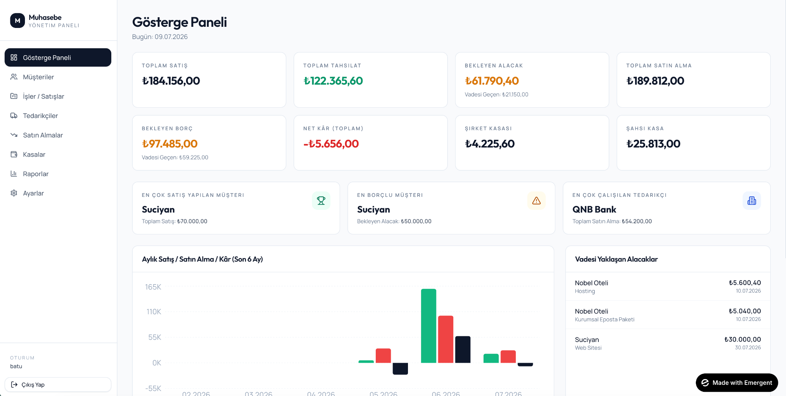
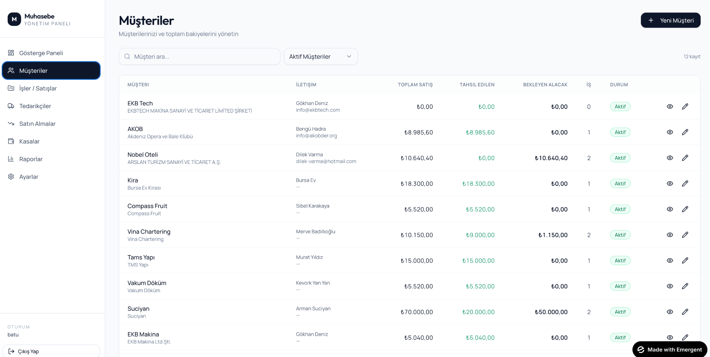
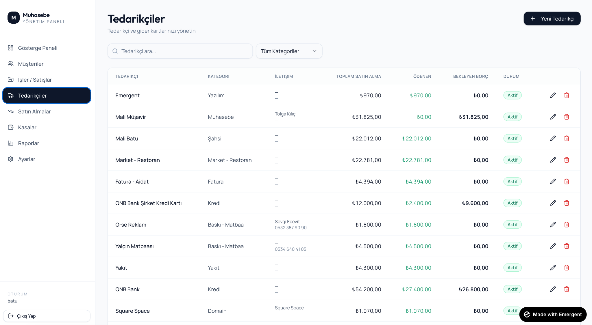
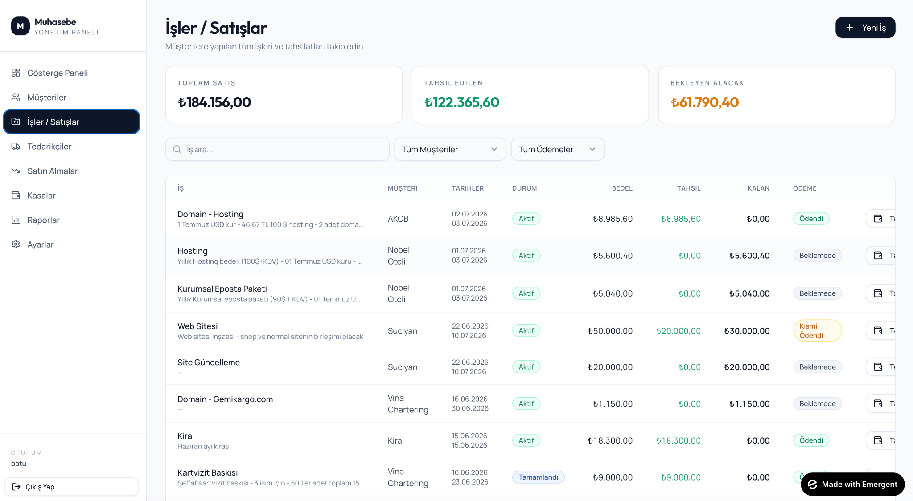
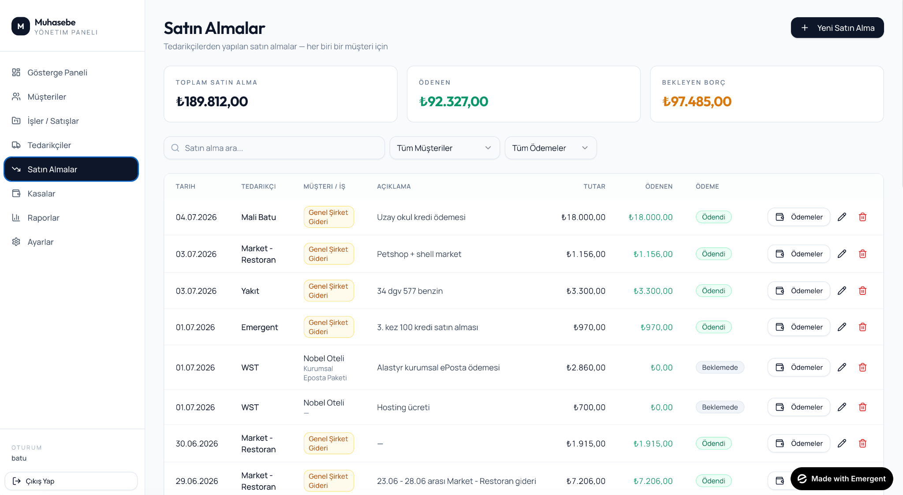
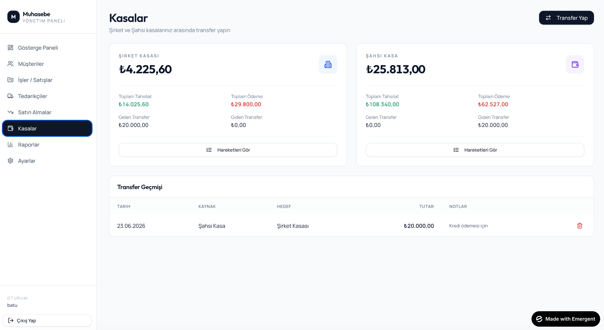
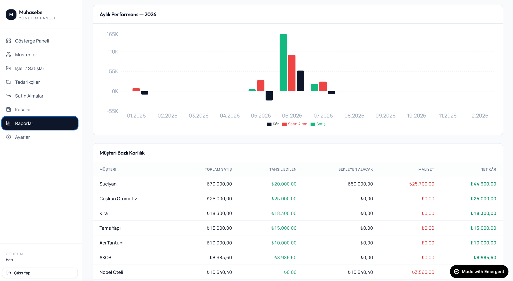
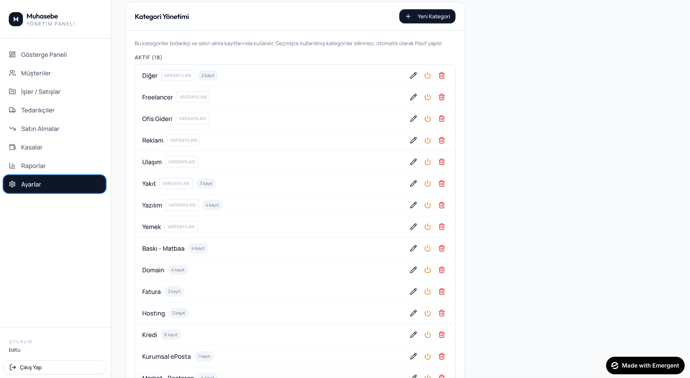

Cari takip
Müşteri ve tedarikçi bakiyelerini, alacak ve borçları hızlıca görün.
PENZ; cari, iş, tahsilat, ödeme ve nakit akışını tek ekranda sadeleştiren pratik işletme takip uygulamasıdır.
Simply Smart. Karmaşık ERP değil, günlük kararlar için net takip.

Dağınık Excel dosyaları, unutulan vadeler ve karışan müşteri işleri yerine tek, anlaşılır bir sistem.
Müşteri ve tedarikçi bakiyelerini, alacak ve borçları hızlıca görün.
Her müşteriye bağlı işleri, maliyetleri ve tahsilat durumunu ayrı ayrı yönetin.
Gelen, giden, vadesi yaklaşan ve geciken ödemeleri tek bakışta izleyin.
Karışık muhasebe ekranları yerine işletme sahibinin anlayacağı net özetler.
PENZ; stok, üretim ya da ağır muhasebe yerine müşteri, iş, tahsilat, gider ve nakit akışını takip etmek isteyen hizmet odaklı işletmeler için tasarlandı.
İş, teklif, tahsilat ve giderlerini tek yerde görmek isteyenler.
Çekim işleri, müşteri ödemeleri ve proje giderlerini takip edenler.
Proje bazlı gelir, satın alma ve tedarikçi ödemelerini yönetenler.
Müvekkil, dosya, tahsilat ve düzenli giderlerini sade şekilde izlemek isteyenler.
Müşteri bazlı işler, tedarikçiler ve kârlılık takibini netleştirmek isteyenler.
Aylık hizmet, proje bedeli ve ödeme takibini kolaylaştırmak isteyenler.
Müşteriler, tedarikçiler, işler, satın almalar, kasalar ve raporlar ayrı ayrı görünür. PENZ’in asıl gücü, tüm bu alanları sade bir arayüzde toplamasıdır.
Toplam satış, tahsilat, alacak, borç, kasa ve aylık performans aynı ekranda toplanır.
Müşteri bazında toplam satış, tahsil edilen tutar, bekleyen alacak ve iş sayısı net görünür.

Toplam satın alma, ödenen tutar ve bekleyen borç tedarikçi bazında düzenli kalır.

Aktif işler, tamamlanan işler, kısmi ödemeler ve bekleyen alacaklar tek listede görünür.

Tedarikçilerden yapılan satın almaları müşteriye, işe veya genel gidere bağlayabilirsiniz.

Tahsilat, ödeme ve kasa transferlerini net şekilde izleyin.

Müşteri bazlı kârlılık, satış, satın alma ve net kâr bilgisi karar almayı kolaylaştırır.

Kategori yönetimiyle gider ve tedarikçi yapınızı kendi işletmenize göre şekillendirin.

PENZ’in amacı her şeyi karmaşıklaştırmak değil; bugün ne aldınız, ne ödediniz, kimden ne bekliyorsunuz, bunu netleştirmek.
✓ Çoklu firma yapısına uygun
✓ Müşteri, tedarikçi ve genel gider takibi
✓ Tahsilat ve ödeme geçmişi
✓ Küçük işletmeler için hızlı kullanım
İlk kullanıcılar için sade kurulum, hızlı başlangıç ve özel fiyatlandırma planı hazırlanıyor.
Bilgi almak istiyorumİşletme takibini sadeleştirmek istiyorsanız bize ulaşın.
hello@penz.app